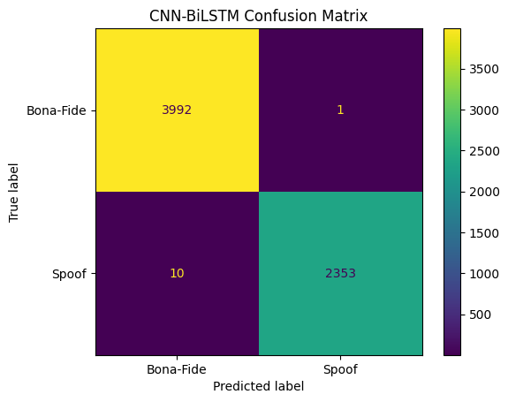
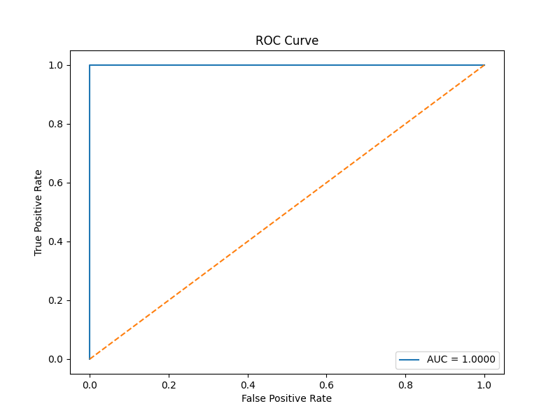

CNN-BiLSTM speech authenticity system
Audio Forgery Detection
A deep-learning project that turns speech into MFCC sequences, learns temporal artifacts with a CNN-BiLSTM network, and separates bona-fide audio from spoofed speech.
Built on release-in-the-wild speech samples.
The local metadata file maps each audio file to a speaker and binary label, then creates a stratified 80/20 split for repeatable training and evaluation.
From raw waveform to authenticity score.
The page mirrors the repository workflow: metadata loading, feature extraction, sequence modeling, and saved evaluation artifacts.
Metadata
Labels are loaded from meta.csv and mapped into bona-fide as 0 and spoof as 1.
MFCC
Librosa extracts 40 MFCC coefficients, padded or trimmed to 300 frames for each file.
CNN-BiLSTM
Conv1D blocks capture local spectral patterns before BiLSTM models long-range timing cues.
Decision
A sigmoid output converts learned evidence into a binary authenticity decision.
The model is compact, temporal, and presentation-ready.
The architecture is small enough to explain clearly while still combining convolutional feature discovery with recurrent sequence reasoning.
CNN-BiLSTM Architecture
Input shape is 300 time frames by 40 MFCC features.
Input300 x 40 MFCC sequenceConv1D64 filters, kernel size 3, ReLU, max pooling, batch normalizationConv1D128 filters, kernel size 3, ReLU, max pooling, batch normalizationBiLSTM64 units in both directions for temporal contextDenseDropout 0.3, 64-unit ReLU layer, sigmoid outputBaseline Comparison
The repository also includes a Random Forest baseline that uses chroma features. It gives a conventional ML reference point against the stronger MFCC sequence model.
Random Forest
- Chroma mean features
- 100 estimators
- Max depth 20
- Fast baseline training
CNN-BiLSTM
- 40 x 300 MFCC sequences
- Two Conv1D blocks
- Bidirectional LSTM
- Saved as cnn_bilstm_full.keras
Evaluation metrics are visible and reviewable.
These values are calculated from the saved confusion matrix and ROC plot generated by the repository's evaluation script.
Confusion Matrix

ROC Curve

Ready for project review.
The web page presents the dataset, feature pipeline, model design, and evaluation outputs in one polished browser experience.